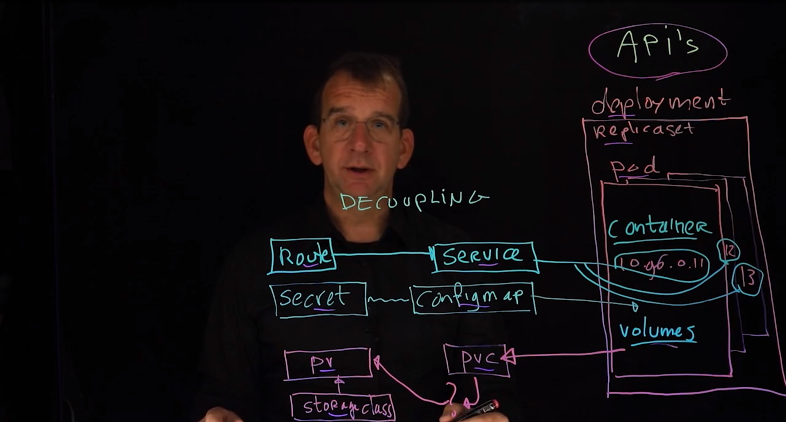
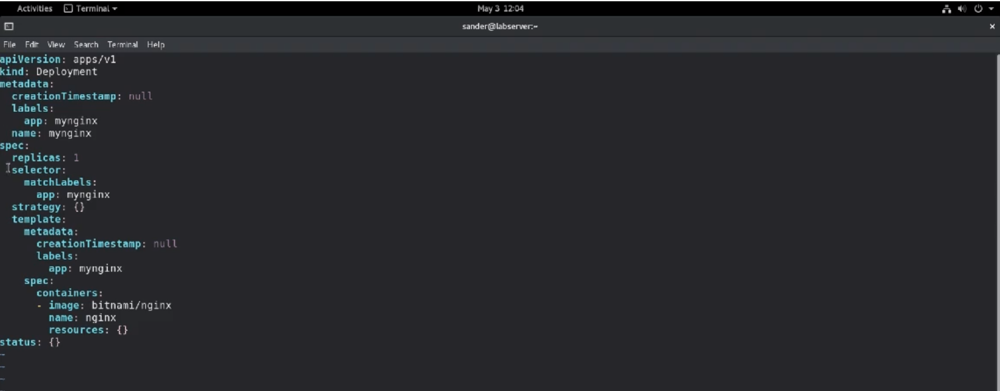

Module 2: OpenShift Fundamentals
7.2 Exploring the API
oc credentials
- crc console --credentials
Kubernetes and OpenShift define the following

- Pods are managed by deployments
- Deployments use replica sets to take care of scalability.
- Service exposes an application running on a set of pods as a network service. It provides a network endpoint of IP addresses and Ports that allows other services or external clients to communicate with the pods running the application regardless of which node the pods are running on.
- ConfigMap decoupling configuration from application code can be mounted as file or environment variables within a container, making it easier to manage and update configurations without the need to rebuild or redeploy applications.
- The Secret is for securely storing variables and configuration files.
- Persistent Volume represents storage at a specific site, which can be dynamically created by the storage class.
- A Persistent Volume claim is what the volume uses to connect to a specific storage type.
7.3 Deploying an Application in OpenShift
7.3.1 Linux kernel implements features important for Kubernetes and containers
- Namespace in Linux kernel provides strict isolation between containers.
- Kubernetes also uses namespaces for isolation.
- OpenShift uses projects instead of namespaces.
- Projects in OpenShift combine namespace with Role-Based Access Control.
- Ordinary users can only see their own projects, administrators can see all projects.
- Projects allow ordinary users to create their own environments.
- Projects are used for organization and resource restrictions.
- Quota can be used to limit resource availability in a project.
- Administrative roles can be applied to specific projects in OpenShift.
- Projects in OpenShift have more functionality compared to namespaces in Kubernetes.
Running Applications in OpenShift
Understanding oc new-app sources
Understanding Deployment vs. DeploymentConfig
- In older versions of OpenShift, the OpenShift API resource DeploymentConfig was the default resource to run applications.
- The DeploymentConfig uses a ReplicationController to control Pod replication.
- In newer versions of OpenShift, the Kubernetes API resource Deployment should be used instead.
- The Depolyment uses the ReplicaSet resouce to control Pod replication,
- Use oc new-app with the --as-deployment-config option to run applications specifically as a deployment config.
- Some resources like templates still are creating DeploymentConfigs instead of Deployments as the default. In case oc get deploy doesn't show your applications use oc get deploymentconfig instead.
7.4 Displaying Information about Running Applications
Demo: Displaying Application Information
- oc get all
- oc get pods
- oc get pods -A
- oc get pods mypod -o yaml
- oc describe pods mypod
- oc logs mypod
7.5 Using Labels
Demo: Using Labels
- oc get pods,rs --show-labels
- showing all the different labels that have been set
- oc get pods,rs --selector app=nginx
- use to filter Pods and other applications based on a specific label
- oc label pod mypod storage=ssd
- added the label
7.6 Using OpenShift in the Declarative Way
Understanding Declarative vs. Imperative
- In an imperative way of working, an operator types commands to get things done.
- In a declarative way of working, the configuration is managed as code.
- In DevOps environment, it's preferred to work in a declarative way.
- While using a declarative approach, it's easy to manage versions of configuration code using a version control system.
- OpenShift resources can be defined in a declarative way using YAML files.
Creating YAML Files
- The recommended way to create YAML files is by generating them: oc create deploy mynginx --image=bitnami/nginx --dry-run=client -o yaml > myngnix.yaml

- Alternatively, YAML files can be written from scratch, according to the directions that can be found using oc explain deploy.
- Also, but a bit more work, YAML files can be generated from running resources, using oc get deploy mynginx -o=yaml. You will need to clean up the resulting YAML file though.
7.7 Using Services to Access Pods
Understanding Services
- In OpenShift, a Pod SDN is provided for Pod access.
- Pod IP addresses are volatie.
- For that reason, Pods are not addressed directly, but services are used instead.
- Services are exposed on the cluster IP address.
- The service provides an IP address that can be used to access workloads running in Pods, either from within the cluster, or from outside the cluster if a router is added.
- Services also provide load balancing when multiple Pods are used in a replicated setup.
Understanding Pod to Service Connection
- Services are using selector labels to find the Pods they should connect to.
- The Pods themselves know which services they are connected to by two environment variables that are automatically assigned to running Pods.
- SVC_NAME_SERVICE_HOST is the service IP address
- SVC_NAME_SERVICE_PORT is the service port
- Services also automatically register with the Kubernetes internal DNS server, which makes them accessible throught DNS as SVC_NAME.PROJECT_NAME.svc.clustername.
- Clustername can be obtained using oc config get-clusters or oc config current-context.
Understanding Pod Access Options
- Different types of service can be used.
- ClusterIP provides an IP address that is only accessible on the ClusterIP. This IP address cannot be addressed directly by external ysers.
- NodePort provides a node port on the cluster nodes which allows users to connect to ther service directly.
- In OpenShift, services are not addressed directly. Use routes instead.
- oc port-forward can be used to expose a Pod port on the local workstation where the oc client is used. This is good for administrator/ developer access, but not to expose workloads to external users.
- oc port-forward mynginx 8080:80
7.8 Using Routes to Provide Access to Applications
Understanding Routes
- Routes use services to provide access to Pods.
- To do so, router Rods are deployed on infrastructure nodes.
- Router Rods bind to the node public IP addresses, from where traffic can be forwarded to services, thus providing access to the Pods.
- DNS must be configured to enable traffic forwarding to the appropriate public node IP address.
- In the route spec, two important fields are used.
- spec.host: the DNS name that is used by the route to expose itself
- spec.to: the name of the service resource
- Routes can be configured to handle TLS traffic
Creating Routes
- oc expose service is used to create routes.
- The oc expose command generates a DNS name that looks like routename.projectname.defaultdomain.
- The default domain is wildcard DNS domain that is configured while installing OpenShift, and matches the OpenShift DNS name.
- On CRC, the default domain is set to apps-crc.testing.
- The external DNS server needs to be configured with a wilcard DNS name that resolves to the load balancer that implements the route.
Lesson 7 Lab Running Application in OpenShift
- Use oc new-app to run the rhscl/mysql-57-rhel7:latest image as a deployment config. This is likely to fail. Analyze what is going wrong, and make sure the application is started the right way.
Solution
Login, create new project and add application
- Check role
- oc whoami
- Create a new project lab7
- oc new-project lab7
- Add application to the project
- oc new-app rhscl/mysql-57-rhel7:latest
- container image remote registry lookup failed
Fix incomplete registry name
- Search complete registry name of mysql-57 like images in Podman search
- podman search mysql-57 | less

- Specify with complete registry name and try again
- oc new-app registry.access.redhat.com/rhscl/mysql-57-rhel7
Check logs
- Status check
- oc get all
- Attention to CrashLoopBackOff
- Check logs of the MySQL pod
- oc followed by #
- Complaining about the environment variables
- We can use oc new-app to see if there is any Information about environment variables.
- oc new-app -h | less

- We use oc set to update environment variables on a pod
Fix lacking environment variables
- To show how to update environment variables
- oc set env -h | less
- To show name of deployment
- oc get deploy
- Command to update environment variables
- oc set env deploy/mysql-57-rhel7 MYSQL_ROOT_PASSWORD=password
- If you update critical parameters on running workloads, the workloads are managed by the deployment and the deployment is considering this an update. So it will just create a new pod with the new running parameters. And that's also why this decoupling is so very important as we have just created a new pod. You must make sure that after creating the new pod, it can still access the information that it was accessing before.